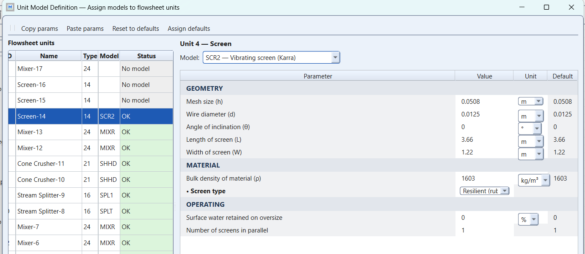
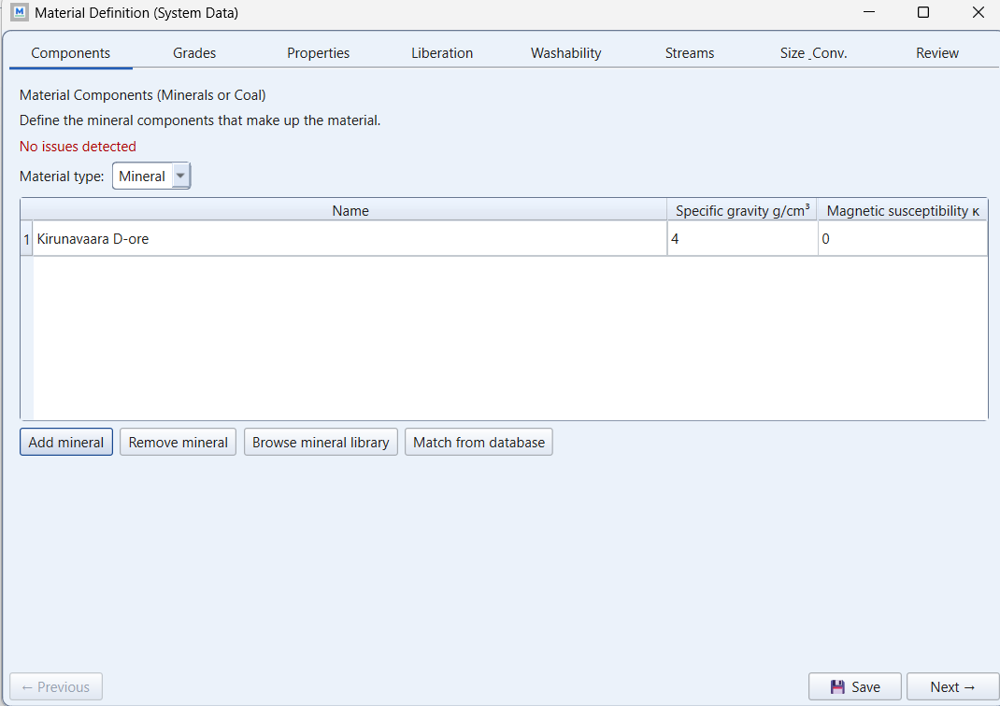
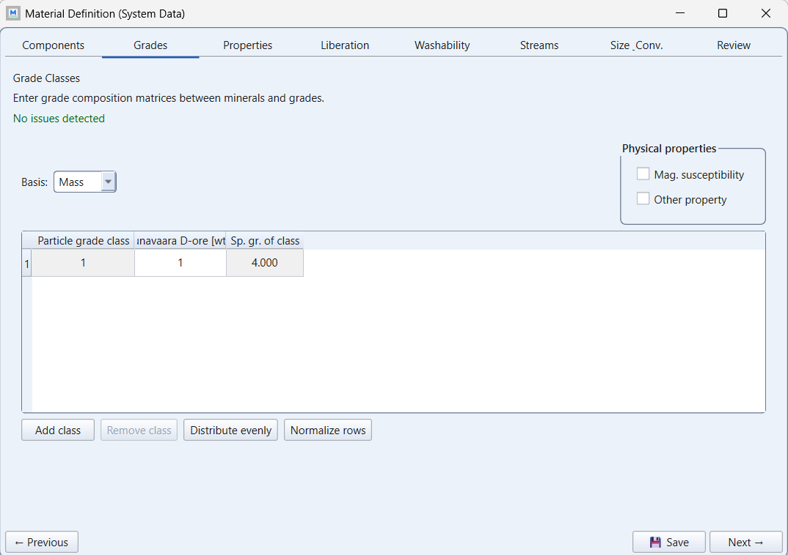
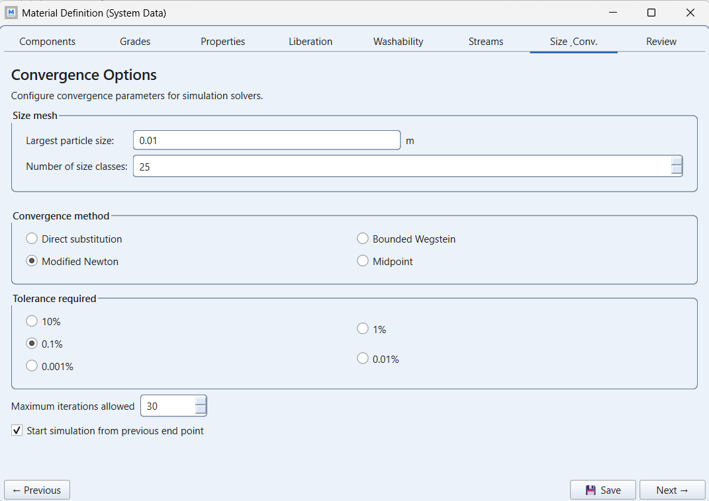
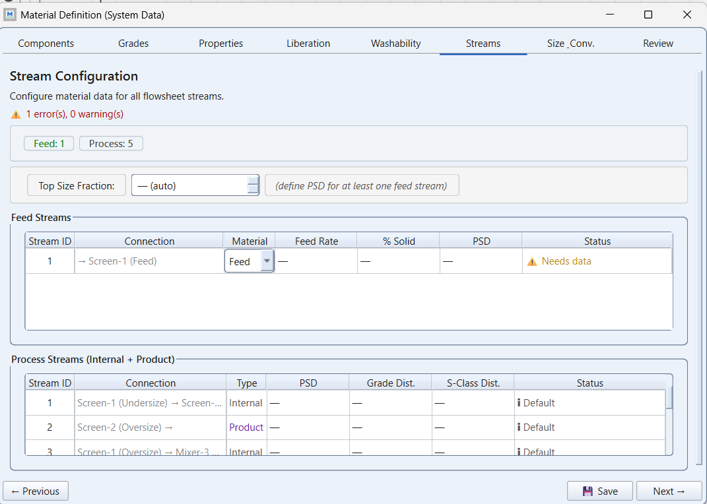
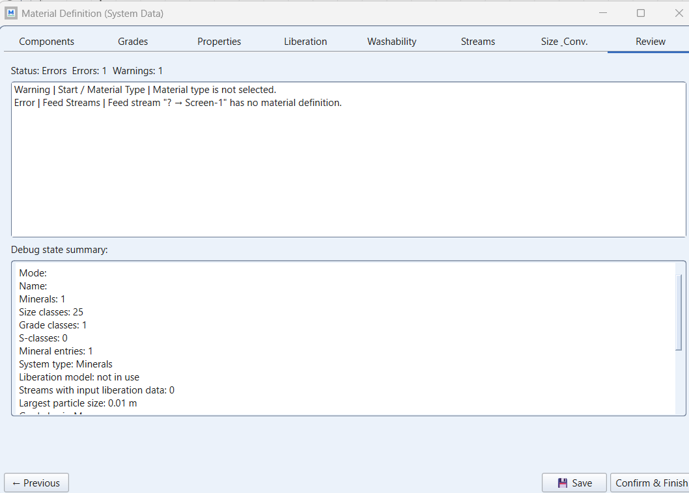

Exercise 1: design of a screening station
module 2 · King 4 (screens), 10.4 (example 10.1)
Read in King: King 4 · Size classification · p. 77King 10.4 · Simulation of single unit operations and simple flowsheets · p. 349
The exercise sheet and the worked files live on the PC copy of Malla; the sheet's numbers are transcribed in this guide.
On this page
What they ask
Kirunavaara D-ore comes out of the cobbing plant at 600 t/h, solids density 4.0 t/m³, with the size distribution below. Build a screening station that splits it into three fractions: coarser than 100 mm, 20 to 100 mm, and finer than 20 mm. Two product streams leave the station:
- the middle fraction (20 to 100 mm) goes to possible extra crushing;
- the coarse and the fines together feed the autogenous (AG) mills.
Use the Karra screen models, annotate every product stream, and put fly-outs on all streams. Then a sensitivity run: move the deck that limits the middle fraction on the coarse side in 5 mm steps up and down and see what happens to screen areas, the , and of the products, and the mass flows. Plot it in Excel.
Feed particle size distribution, the sheet's table copied verbatim (sizes in mm, cumulative percent finer):
| Size (mm) | Cum % finer | Size (mm) | Cum % finer |
|---|---|---|---|
| 600 | 99.5 | 30 | 49.9 |
| 300 | 95.1 | 15 | 36.9 |
| 100 | 84.3 | 10 | 30.0 |
| 70 | 73.5 | 5 | 19.8 |
| 50 | 64.1 | 3.3 | 15.1 |
How the work flows
The sheet is one page and reads like a build order: two cuts, Karra, fly-outs, then a sensitivity. The natural misreading is to build the station, press Run, and start moving the aperture. The work has three shapes in a row, and keeping them apart is most of the exercise. First you build the station once (the feed, two SCR2 decks, a mixer, two named products) and run it. Then a short sizing loop: a Karra deck has a real length and width, and its report answers with an area utilisation factor; you resize one deck per run until each factor sits near 1, and that file is the base case, frozen. Then the seven sensitivity cuts (85 to 115 mm) are frozen runs: the coarse aperture moves, nothing else does, and you read rather than tune.
- Fixed for every run: the feed of section 2.1 (Kirunavaara D-ore, 4.0 t/m³, 600 t/h, the ten sieve points), the size mesh you define once (25 classes from 0.9 m), the topology (screen 1 over screen 2, a mixer, the products "To crushing" and "AG feed"), the model SCR2 on both decks, and the 20 mm aperture of the fine deck. Change any of these between two runs and the sensitivity plot compares two different stations.
- Chosen once: two single-deck screens in series rather than one double-deck screen (so each deck gets its own area), and the SCR2 fields that describe the deck besides its aperture: wire diameter, angle of inclination, bulk density of the broken ore (an assumption: the sheet gives the solids density, not the bulk density) and screen type, plus a first-guess length and width.
- Turned in the sizing loop: the length and width of the decks, one deck per run, until the area utilisation factor in each screen report is close to 1. That factor is the sheet's "required screen area" in MODSIM's own terms.
- Frozen in the sensitivity runs: everything except the aperture of screen 1: 85, 90, 95, 100, 105, 110, 115 mm, one run each, each saved under its own name. The decks are not resized for each cut; the utilisation factor at the frozen size is what tells you how the required area moves.
- Compared at the end: the seven runs side by side in Excel: the three mass flows, the , and of the products and the required areas against the cut size; and, for the base case, the hand numbers (94 / 252 / 254 t/h) and the AG feed's share coarser than 100 mm against the 15 % of the sheet's background section.
In the sheet's own words, "construct" covers the build and the sizing loop together (a station whose decks have no size is not designed yet: Karra computes the separation from the deck's size and load); "use the Karra screen models" fixes the model, so the model is never a knob; "vary … in steps of 5 mm" prescribes the sensitivity runs one by one; and "how does this change" with "plot the result in Excel" say that the reading, not the running, is the deliverable.
What you touch, read and wait for changes from one kind of run to the next:
| Run | What you change | What you read | When to stop |
|---|---|---|---|
| First run (the build) | Nothing yet: the material of step 5, apertures 0.100 and 0.020 m, first-guess dimensions on both decks | That the Review has no errors and every stream carries tonnage; the three fractions against 94 / 252 / 254 t/h | As soon as it runs and the flows are in the right region: this is the starting point, not a result |
| Sizing runs | The length or the width of ONE deck per run | The area utilisation factor in each screen report; the flows and the of each partition curve | When both factors sit near 1 and the AG feed carries at least 15 % coarser than 100 mm; save as the base case |
| Sensitivity runs (seven) | Only the aperture of screen 1: 85, 90, 95, 100, 105, 110, 115 mm, one copy of the base case each | The required areas (utilisation factor times the deck area), the three mass flows, the , and of the products | After the seventh run: nothing is tuned here |
| Plot and explanation | Nothing | The Excel plot: flows and values against the cut size, areas on a second axis | When every slope has a sentence explaining it in screening terms |
How to check the station
The sheet's success criterion is in its background section: the AG mills need about 15 wt-% coarser than 100 mm, and the fraction that makes critical stones (20 to 50 mm) should be as small as possible in their feed. The design section adds Karra, annotations and fly-outs. Three checks, in this order:
- Against the hand numbers. The ideal split is 94 / 252 / 254 t/h (coarse / middle / fines, from Before MODSIM). A Karra deck misplaces near-size material, so expect the coarse products a few per cent heavier and the fine ones a little lighter. A flow that is off by tens of t/h means a wrong aperture, a wrong unit (metres against millimetres) or a feed that is not the sheet's.
- The AG feed. Read the fly-out of "AG feed": its fraction coarser than 100 mm should be about 27 % (94 of 348 t/h by hand), well above the 15 %; what it carries between 20 and 50 mm is the near-size leakage of the 20 mm deck, and it should be small. A coarse share near or below 15 % means coarse rock is leaving through the wrong product.
- The decks. In each SCR2 report, the area utilisation factor: near 1 is a correctly sized deck (the manual's own words), well above 1 an overloaded one (the separation degrades: the falls below the aperture and the oversize carries more fines), well below 1 an oversized one. The required area for the sensitivity table is, to a first approximation, the utilisation factor times the area you gave.
Why (the engineering)
Why three fractions and not two. An AG mill grinds the ore with the ore: the biggest lumps are the grinding media. The sheet says a mill needs roughly 15 wt-% coarser than 100 mm in its feed to work. But lumps of about 20 to 50 mm are the wrong size: too small to grind anything, too big to be ground quickly. They accumulate as critical stones and eat mill capacity. So the station removes the range that would become critical stones (the middle fraction, sent to crushing) and keeps both the media (coarse) and what is already fine.
Why two cut sizes means two decks. Three fractions need two separations: one at 100 mm and one at 20 mm. In MODSIM that is either two single-deck screens in series (the undersize of the 100 mm screen feeds the 20 mm screen) or one double-deck screen. Two single decks let you size each deck's area separately, which is exactly what the sensitivity question asks about.
Why Karra and not a distribution curve. A distribution-curve model (CYCB) takes a partition curve you give it and applies it whatever the feed rate: it cannot tell you the area you need. The Karra model computes the separation from the basic capacity with corrections for near-size material, oversize load, open area and so on. It responds to loading, so it can answer "how big must the screen be" and "what happens if I move the cut". That is the whole point of the exercise.
Why the coarse plus fines stream still works as AG feed. Check it before you simulate: if about 94 t/h are coarser than 100 mm and about 254 t/h finer than 20 mm (numbers below), the combined stream carries roughly , that is 27 wt-% coarser than 100 mm, above the 15 % the mill wants. If your simulation shows much less, something is sending coarse rock to the wrong place.
Before MODSIM: numbers by hand
Ideal separation is the upper bound. Read the feed table in What they ask as cumulative percent finer:
- Coarser than 100 mm: % of the feed, so t/h.
- Finer than 20 mm: 20 mm is not in the table. Interpolate on a log size axis between 15 mm (36.9 %) and 30 mm (49.9 %): the weight of 20 mm between them is , so
per cent, which is t/h.
- Middle, 20 to 100 mm: %, so t/h.
So the ideal station sends about 252 t/h to crushing and 348 t/h to the AG circuit. A real Karra screen will not hit these exactly: near-size particles (roughly 0.75 to 1.25 times the aperture) partly report to the oversize, so expect the coarse products a few percent heavier and slightly contaminated with undersize, and the fine products a little lighter and cleaner. If your simulated flows are far from these, check the feed definition first.
Here is the station as the sheet describes it, with the hand tonnages on every stream and the MODSIM names used in the steps below. The deck with the accent border is the one the sensitivity analysis moves: it is the deck that limits the middle fraction towards the coarse end.
The models window
Both screens of the station take the Karra model, SCR2, in the GUI's Unit Model Definition window. Its fields, as the window labels them, and where each number comes from:
- Mesh size h = 0.100 m on screen 1 and 0.020 m on screen 2. The two cuts of the sheet. The window wants metres, so 100 mm is typed as 0.1.
- Wire diameter d = 0.0159 m on screen 1 and 0.0053 m on screen 2. From ScreenMesh.pdf, medium wire: a 4 in opening has 15.875 mm of wire and 74.8 % open area, a 3/4 in opening 5.258 mm and 61.4 %. Read as on the tables page: mm ÷ 25.4, the nearest row, the medium column.
- Angle of inclination = 0°, or the group's choice. 15 to 20° is usual for an inclined vibrating screen; Karra's capacity factors change with it, so declare what you take.
- Length × width: a first guess, then the sizing loop until the area utilisation factor in the unit report is near 1.
- Bulk density: the crushed ore in bulk, well below the solid's 4000 kg/m³. 2200 to 2600 is a usual range. The sheet gives ρs 4.0 t/m³ for the solid only, so declare the bulk value you take.
- Screen type: woven wire. The mesh table is for wire cloth; the window's default is rubber, so change it or justify it.
- Surface water on oversize = 0. A dry ore.
- Screens in parallel = 1. Two only if one deck of realistic size cannot carry the load.

The wire diameter is the field people guess; the slow reading of the mesh table is on Reading a machine table, step by step.
Step by step in MODSIM
Before the first click: Get MODSIM running without grief covers the decimal point, the work area and the PAK habits. Your Feed Stream dialog showing 600,0000 with a comma is the symptom it fixes. The course accepts both programs; the steps below follow the MODSIM-GUI material wizard tab by tab, with the classic MODSIM equivalent in one line. Each "How to fill this window" fold lists the values field by field and shows the window as it looked on 4 September, before the values went in.
Draw the flowsheet and name the two products
GUI: File > New project; place Screen-1, Screen-2 and Mixer-3; draw Feed > Screen-1, Screen-1 undersize > Screen-2, Screen-1 oversize > Mixer-3, Screen-2 undersize > Mixer-3, Screen-2 oversize > product named "To crushing", Mixer-3 > product named "AG feed". Classic: File > Start a new job, same drawingMaterial wizard, Components tab: one ore, its density, material type Mineral
Flowsheet > Material Definition (System Data) > ComponentsHow to fill this window
- Material type = Mineral
- Add mineral, Name = Kirunavaara D-ore
- Specific gravity g/cm³ = 4
- Magnetic susceptibility κ = 0 (not used by a screen)
- Save, then Next

Grades, Properties, Liberation, Washability: pass through
Next, four timesHow to fill this window
- Grades = one particle grade class, basis Mass, 1.0 for the ore, sp. gr. 4.000 filled by the wizard
- Properties = "Use S-classes" unticked
- Liberation = "Specify liberation models of Andrews-Mika diagram" unticked
- Washability = nothing to do (coal float-sink only)

Size_Conv. tab: a size mesh that covers 600 mm
Size_Conv. > Largest particle sizeHow to fill this window
- Largest particle size = 0.9 (METRES; the course's worked example CobbScreen.PAK uses 0.9 m)
- Number of size classes = 25
- Convergence method = Modified Newton (default)
- Tolerance required = 0.1 % (default)
- Maximum iterations allowed = 30
- Start simulation from previous end point = ticked

Streams tab: define the feed
Streams > Feed Streams > row 1 (→ Screen-1) > Material = Feed > open the row's Feed Stream dialogHow to fill this window
- Solids feed rate = 600 tonnes/hr
- Percent Solid = 100 (dry feed; the worked example CobbScreen.PAK feeds 600 t/h at 100.00 % solids)
- Particle Size Distribution = Manual > Define PSD… > the ten sieve points of the sheet in µm with cumulative % finer: 600000 → 99.5, 300000 → 95.1, 100000 → 84.3, 70000 → 73.5, 50000 → 64.1, 30000 → 49.9, 15000 → 36.9, 10000 → 30.0, 5000 → 19.8, 3300 → 15.1
- Specify grade distributions = unticked
- Specify distribution over S-classes = unticked
- OK

Review tab: zero errors, then Confirm & Finish
ReviewHow to fill this window
- Errors = 0
- Warnings = 0 (material type selected, feed defined, products named)
- Confirm & Finish

Give both screens the Karra model and their apertures
Screen-1 > model SCR2 (single-deck Karra) > aperture 0.100 m. Screen-2 > SCR2 > aperture 0.020 m. Classic: same codes in the unit-models menuRun, then read the fly-outs and the unit reports
Run the simulation; switch fly-outs on for every stream; open the screen reportsSave, and save the sensitivity variants under new names
GUI: save the .mpd in Projects MODSIM and export a PAK. Classic: pack the job to a .PAKScreenshots for steps 7 to 9 (the SCR2 dialog, the run, a fly-out) join this page as soon as they are taken.
Expected results
| Quantity | Ideal (hand) | Karra simulation, typical |
|---|---|---|
| Coarse, > 100 mm | 94 t/h | somewhat more, with a few % of near-size undersize in it |
| Middle, 20 to 100 mm | 252 t/h | close, slightly less |
| Fines, < 20 mm | 254 t/h | slightly less, clean |
| AG feed (coarse + fines) | 348 t/h, about 27 % coarser than 100 mm | above the 15 % the mill needs |
| Area utilisation factor, each deck | 1 by definition of a correctly sized deck | near 1 after the sizing loop; the value at each cut gives the required area |
The partition curves of the two screens should have their a little below the aperture (near-size particles that should pass partly do not) and a sharpness that improves as the deck gets bigger. The size distributions to plot: feed, the two products, and ideally the intermediate stream between the screens.
Common mistakes
These first three are not hypothetical: they are in the Excercise 1.mpd saved on 2 September, and they are the fastest lesson this exercise has.
What the wizard's Review tab told you on 4 September, and where each line is fixed: Material type is not selected → Components tab, pick Mineral. Feed stream "? → Screen-1" has no material definition → Streams tab, open the feed row and press OK on the Feed Stream dialog. Duplicate stream name: Screen-2 → ? → name the two product streams on the flowsheet. A number shown as 600,0000 means Windows still uses the decimal comma.
Other classics: a decimal comma in the Windows regional settings; running from the MODSIM program folder instead of a work area; forgetting fly-outs (the exercise asks for them on every stream); using a distribution-curve model with an assumed when the sheet says Karra; in the GUI, typing millimetres into a field that expects metres.
- Treating the first run as the result. The station is designed in the sizing loop (deck dimensions until each utilisation factor is near 1) and read in the seven frozen cuts; a single run with guessed deck sizes has an area utilisation factor nobody checked and a sensitivity plot with one point.
Sensitivity analysis
Vary the coarse deck around 100 mm in 5 mm steps: 85, 90, 95, 100, 105, 110, 115 mm. Keep the 20 mm deck fixed, and keep both decks at the dimensions of the base case: the "required screen area" the sheet asks about is read from the utilisation factor at each cut, not re-designed for each cut. For each run, write down:
| Cut (mm) | Deck areas 1 / 2 (m²) | Coarse / middle / fines (t/h) | · · of coarse / middle / fines |
|---|---|---|---|
| 85 | … | … | … |
| 90 | … | … | … |
| 95 | … | … | … |
| 100 | … | … | … |
| 105 | … | … | … |
| 110 | … | … | … |
| 115 | … | … | … |
What to expect and explain: a coarser cut sends more rock to the middle fraction (more to the crusher, fewer coarse lumps for the mill) and loads the 20 mm deck harder, so its required area grows; the coarse product gets coarser (its climbs) and the middle product's climbs with the aperture. A finer cut does the opposite and moves the AG feed towards the 15 % limit. Plot the three mass flows and the three values against the cut size; the required areas on a second axis. The plot is the deliverable, but the sentence that explains the slope is what the seminar wants to hear.
Compare with the worked PAK
After you have tried: CobbScreen.PAK on the Canvas page is a complete screening-station simulation to unpack, run and compare with your own; the Suggested solution, Exercise 1 (Excel) has the numbers. Compare flows and partition curves, not just the picture.